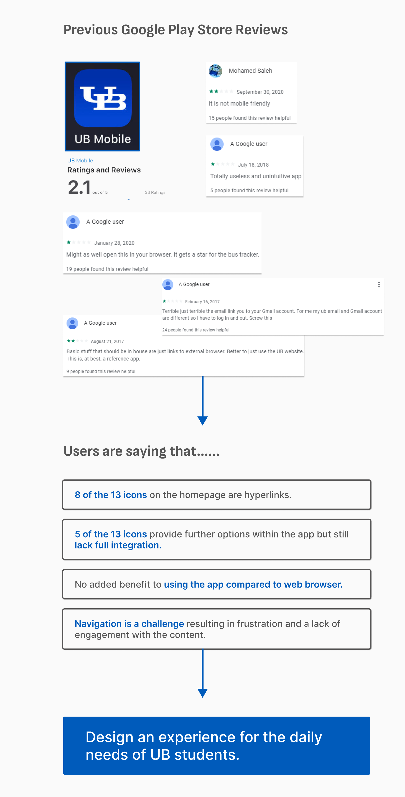
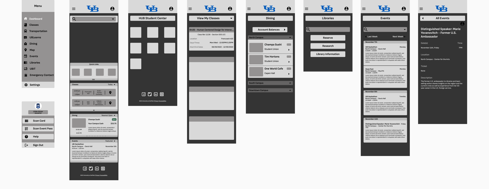
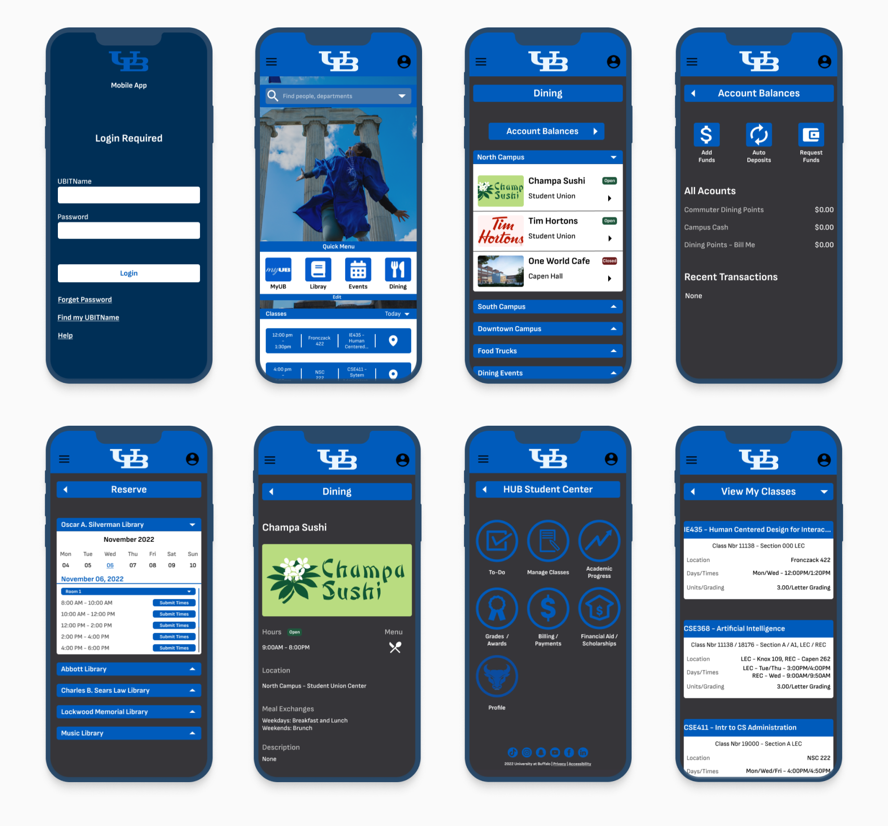

University at Buffalo began a redesign process of it's entire mobile application with the vision of becoming a highly used mobile app by current students. It's current mobile application is inadequate in terms of both functionality and user experience, resulting in low usage among students. The mobile app's deficiencies include poor usability, an absence of comprehensive content integration, and a tendency for navigation to be hindered by technical malfunctions.

Solution
We have designed a solution that integrates all the highly desirable features students use daily. With this new design, students can complete all tasks that previously required them to visit the UB website. The newly designed app now includes a single-sign-on feature and provides real-time access to course information, payment data, library booking, and more.
Easy access to the most convinent & important information
The newly designed mobile app allows students to access all the information they need as a UB Student. Course information,
payment data for meal plans and books, and much more.
Integration of Systems & Services
One-time login that allows for access to real-time systems and services
All information and services that were scartted throughout websites and differents apps have all be integrated into one easy-to-use app.
User-friendly Navigation
Seamless and an intuitive experience for busy college students.
Our app is designed to minimize clicks and steps, ensuring a smooth and efficient user experience. By adhering to the university's style standards for color, typography, layout, and iconography, the app provides a familiar and cohesive system for users.
Our Process
My Contribution
I was the sole designer on the team alongside 3 other engineers. I was responsible for the product design and UX/UI experience for the app. I setup the usability testing sessions, created the scripts, and conducted one-on-one semi semi-structured interviews.
I redesigned the full app experience and proposed the use of Failure Mode & Effect Analysis (FMEA) to identify usability issues within the current app.
Research
Google Forms Survey
With our research we wanted to focus on 3 main things:
Understanding the goals and expectations students have with a university mobile app
Uncovering pain points with the existing user journey
Measure the current successful and unsucessful areas of the mobile app
Google Forms survey was our first form of information gathering. By using a survey, we were able to gather a larger sample of participants. With the survey questions we explored:
The frequency of users utilizing the app
Use of other UB affiliated apps
What the current mobile app was being used for
Where the app does well and areas that could use improvement
One-on-one Semi-structured Interviews
One-on-one semi-structured interview was our second and main form of information gathering. The interview consisted of providing tasks to the participants via a script that required them to go through the current UB Mobile App. The results of our Google Forms survey dictated the questions and design of the interview.
The interview had 3 key important factors:
A metric to measure how easy or diffucult a task was 1-10 (1 being extremely easy and 10 being extremely difficult)
A metric to measure how often they would use a feature in the future (1 being never and 10 being very often)
Thoughts on the specific feature the task was utilizing
Analysis
After collecting the recordings from the user interviews, we relied on a data-driven approach known as the Failure Mode & Effects Analysis (FMEA) to inform our process and list usability issues in order of priority. FMEA helps to identify the severity score of a usability issue based on the 3 variables.
Key Insights
Based on our 47 survey responses and user interviews conducted with 6 participants on the existing mobile app, we found the following key issues:
4/6 participants found the use of hyperlinks to browser caused many forms of navigation issues.
3/6 found the constant log in process arduous.
While 18/47 found the current app has many helpful features, 21/47 found it unintuitive and difficult to navigate.
Following the usage rate of each page, we narrowed our redesign on 5 pages along with additional features.
Design
Early Wireframes
Based on the key insights identified, I developed potential solutions to address those challenges:
Reducing the number of steps to minimise time to completion
Use a single sign-on method to remove the repetitive log-in
Provide access to information that UB students use daily.

Validating Design
I conducted usability testing sessions with UB students to validate whether the new designs for the UB app would solve their problems. I created a script with a scenario asking users to navigate the app to find information on dining, check their payment status, and access their course schedule all while logging in through the single sign-on feature.
During the session, I observed how they interacted with the prototype and completed these tasks. The usability session revealed that it was much easier to navigate and complete tasks due to the intuitive grouping of related features. Users found it simpler to identify the necessary steps, as advanced settings were now hidden under a collapsible toggle, streamlining their experience.
High Fidelity Solution
Following UB's brand color, typography, iconography, and style we prototyped our final solution.

Prototype
Feedback
Usability & Prototype Testing
To validate the effectiveness of the new designs, a qualitative research method was employed, utilizing a similar one-on-one, semi-structured interview process. The interview questions and tasks were modified to fit the prototype but followed a similar format.
Acknowledgement/response when tasks are completed
Consistent back and forward button on each page
More customizability with viewing and filtering information
Provide more eye-catching icon for dropdowns
Increase personalization - tailoring information towards specific demographics
Success Metric
One of the reasons we kept a metric in each interview (Initial interview and Prototype Interview) was because we wanted concrete evidence that our solutions were effective or inneffective.
Our analysis of the data represented in the bar chart revealed that the majority of users, on average, perceived a marked improvement in terms of ease of use when completing tasks with the prototype in comparison to the existing app.
Retrospective
This project was substantial in scope, despite having undergone a process of reduction in the redesign phase, there were still many areas that we desired to explore further. Despite that, I am quite content with the ultimate outcome of the project. However, in retrospect, there are certain aspects that I would have approached differently and intend to address in future projects.
Accessiblity is one of the areas I wish we could've explored more. Because of the time constraint, we could only implement color and font standards following WCAG. In the future, I will make it a priority to include accessibility questions and features to include in the design process.
Iteration leads to better design is something I realized as I kept going through our prototype. In the future, I hope to give me and my team more time when it comes to building out our wireframes and creating an end product.
One of the biggest challege we had was balancing the needs of the users with the constraints of the university. We had to make some trade-offs and scoping down the redesign to ensure that it was feasible to implement. Looking back it, I realize now that if we cut down our time in other parts of the project, we would've had more time to come up with a strategic plan to ensure that we delivered the best available product
Special Thanks: Lovepreet Singh, Isabel Matthei, Leeza Shultz for being amazing teammates!